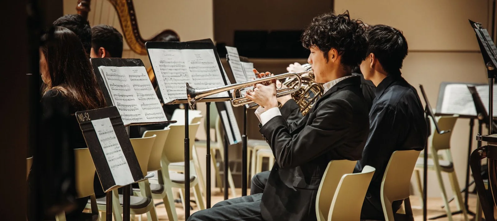

Nate Lee
Nathanael (Nate) Lee is a Brooklyn-born Electrical Engineering major at Northeastern University with a minor in Music Technology, whose path into engineering began through a long-lasting passion and training of classical trumpet at the Manhattan School of Music Pre-College program and Fiorello H. LaGuardia High School of Performing Arts. That background as a performer gave him a deep curiosity about sound, how it behaves, how it can be measured and manipulated, and how engineering can shape the way people hear and experience it. He explores that curiosity through coursework, independent study, hardware projects, and academic research, working across architectural acoustics, audio electronics, digital signal processing, sound design, and more. Combining the ear of a trained musician with the mindset of an electrical engineer, Nate is working toward a career at the intersection of sound and engineering.

Education
Northeastern University
B.S. Electrical Engineering, Minor in Music Technology
Graduating Dec 2028 · GPA 3.6
Relevant coursework
- Electronics
- Linear Systems
- Networks
- Acoustics & Psychoacoustics
- Computing Music Fundamentals
- Embedded Design: Enabling Robotics
- Circuits & Signals
- Differential Equations & Linear Algebra
Skills
- Programming
- MATLAB (Audio Toolbox), MaxMSP, Python, C++
- Modeling & Simulation
- SolidWorks, CAD, CadnaA, OnShape, SketchUp, LTSpice
- Hardware & Instrumentation
- Oscilloscopes, Multimeters, Microcontrollers, Breadboarding, Soldering
- Audio & Design
- FL Studio, Audacity, Davinci Resolve
Music
Trumpet
Training
- Manhattan School of Music Pre-College (2023 – 2024): Studied under Brad Siroky
- Fiorello H. LaGuardia High School of Music & Art and Performing Arts (2020 – 2024)
- Private study with Bryan P. (2020 – 2024)
- Interlochen Summer Arts Camp (2024)
Ensembles
- Northeastern University Symphony & Chamber Orchestras
- MSM Pre-College Philharmonic
- MSM Pre-College Brass Ensemble
- Interlochen World Youth Wind Ensemble
- Interstate Symphony Orchestra
- All-City Band
- LaGuardia Symphony Orchestra
Contact
Personal: nathanael.b.lee@gmail.com
School: lee.nathana@northeastern.edu